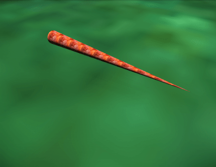
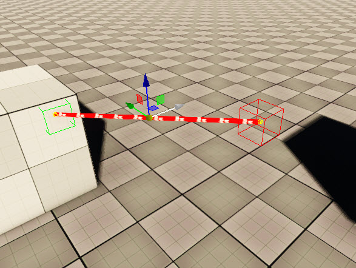
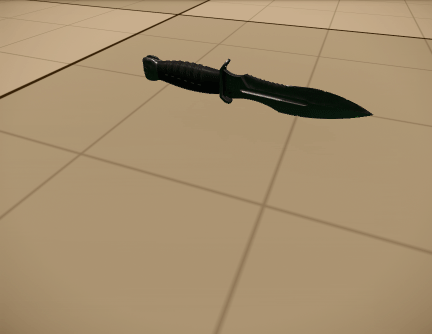

Обзор
Веревки можно использовать для соединения предметов вместе или для подвешивания предметов. Они реагируют на окружающие их объекты, но не влияют на эти объекты.
Инструмент «Веревка» можно найти в разделе Создать объект → Разное → Веревка.
Свойства
Параметры каната | Описание |
|---|---|
Радиус | Радиус или толщина веревки. |
Гладкий | Определяет, будет ли веревка разглаживаться или нет. |
Используйте кости | Веревки, использующие кости, создают свои сетки рендеринга только один раз (во время инициализации или при изменении параметров) и обновляют трансформацию костей только во время выполнения. См. примеры. |
Количество сегментов | Количество сегментов геометрии, используемых в веревке по ее длине. |
Количество сторон | Количество сторон по окружности веревки. 4 стороны сделают трубку ромбовидной, 8 сторон сделают ее более гладкой и т. д. |
Изменение радиуса | Позволяет изменять радиус веревки (или масштаб ее сегментных сеток) по ее длине. Например, -1 уменьшит размер в конце до 0, создав веревку конической формы:  Это только визуальный эффект; это не влияет на физическую симуляцию. |
Кость Гладкая Итерс | Количество проходов по веревке. Чем больше проходов, тем более гладкой становится веревка. Однако их количество зависит от таких факторов, как длина веревки, длина сегментов и количество сегментов.Обычно для достойного результата достаточно всего 2-3 итераций. Больше 5 не нужно, т.к. веревка будет "пересглажена". |
Текстура U-плитка | Мозаика текстур в направлении U. |
Текстура V. Черепица | Мозаика текстур в направлении V. |
Отбрасывать тени | Включите отбрасывание теней от веревки. |
Радиус скрепления концов | Указывает, будут ли концы присоединяться автоматически. |
Привязать радиус | Окружающая среда вокруг концов веревки будет проверена с использованием коробки такого радиуса, чтобы найти места для крепления веревки. |
Пользовательская сетка сегментов | |
сетка | Выбирает файл .cgf (поддерживаются только несоставные файлы cgf). Если у веревки нет материала, она будет заменена на материал из .cgf. Для всей сетки будет использоваться только один подматериал. Использование пользовательских сеток всегда активирует режим снятия шкур с костей, даже если Используйте кости флаг не установлен явно. |
Ось сетки | Устанавливает ось, которая будет выровнена по направлению веревки. |
Длина повтора | Устанавливает точку повтора относительно размера .cgf вдоль этой оси. Например, 1.5 добавит 50% дополнительного свободного пространства после каждого экземпляра сетки. |
Повторить вращение | Позволяет вращать сетку вокруг оси на каждой итерации. |
Гибкий | Делает скинирование костей интерполированным, а не жестким для каждого экземпляра. |
Физические параметры | |
Разделить | Включает динамическое подразделение. |
Максимальное количество вершин сабдива | Максимальное количество разделенных вершин на сегмент. |
Физические сегменты | Количество сегментов веревки в физике (может отличаться от количества сегментов, используемых при рендеринге). |
Напряжение | Указывает натяжение в исходном состоянии. Положительное значение приведет к сближению концов веревки, отрицательное — к провисанию веревки (-0,02 — хорошая отправная точка для экспериментов). |
Трение | Трение эффективно в ненапряженном режиме. В натянутом режиме с динамической тесселяцией это предотвращает скольжение веревки до тех пор, пока она не наклонится слишком сильно. |
Ветер X, Y, Z | Имитация ветра в дополнение к ветрам, специфичным для конкретной местности. |
Изменение ветра | Как сильно меняется ветер. По сути, это множитель рандомизации поверх базовых значений Wind XYZ. |
Сопротивление воздуха | Должен быть установлен, чтобы глобальный ветер окружающей среды вступил в силу. Не требуется для моделируемых значений ветра XYZ. |
Водонепроницаемость | Как веревка взаимодействует с водой, эффективно амортизируя ее под водой. |
Проверка столкновений | Игнорируйте столкновения с другими объектами, пулями и т. д. |
Игнорировать конфликты вложений | Игнорировать столкновения с объектом, к которому он прикреплен. |
Игнорировать столкновения игроков | Игнорируйте столкновения с игроками. |
Нестреляемый | Веревку нельзя сломать выстрелом. Веревка все равно будет реагировать на физические импульсы от пуль. |
Отключено | Симуляция полностью отключена. |
Статическое присоединение: начало | Прикрепите начальную точку к «миру». |
Статический конец крепления | Прикрепите конечную точку к «миру». |
Продвинутая физика | |
Масса | Это влияет на то, насколько сильно веревка будет реагировать на попадания пули. При взаимодействии с твердыми физикализованными объектами он всегда воспринимается как невесомый. |
Трение | Насколько сильно веревка препятствует движению в направлении натяжения (при растяжении с помощью динамической мозаики). Когда подразделение отключено, оно используется как демпфирование «поворота» для прикрепленных объектов. |
Макс Форс | Веревка отсоединится сама, когда будет нарушен этот предел деформации. |
Пробуждение | По умолчанию объект находится в спящем режиме, поэтому он не использует никакие ресурсы физического движка до тех пор, пока это не потребуется. Вы можете сделать объект «бодрствующим» по умолчанию, установив флажок «Пробуждение». параметр. |
Итерации решателя | Для веревок с очень большим количеством сегментов (40+) может потребоваться увеличение этого значения (значения до 10 тыс. все еще приемлемы). |
Макс. временной шаг | Устанавливает максимальный временной шаг, который разрешено сделать объекту (по умолчанию 0,01). Меньшие временные шаги повышают стабильность (например, могут потребоваться для long и тонких объектов), но они более дорогие. |
Жесткость | Устойчивость веревки к растяжению. Возможно, потребуется доработка для более длинных веревок. |
Контактная твердость | Жесткость контактов и ограничение длины в режиме разделения, когда они напряжены и потенциально могут касаться других объектов посередине. Более высокие значения делают его потенциально менее стабильным. |
Демпфирование | Устанавливает силу демпфирования движения объекта. Большинство объектов могут работать с нулевым демпфированием; Если у объекта возникают проблемы с остановкой, попробуйте значения вроде 0,2–0,3. |
Скорость сна | Если кинетическая энергия объекта падает ниже некоторого предела в течение нескольких кадров, объект считается «спящим». Этот предел пропорционален квадрату значения скорости сна. |
Параметры звука | |
Запустить триггер | Триггер этой аудиосистемы срабатывает, когда веревка начинает двигаться. |
Остановить триггер | Триггер этой аудиосистемы срабатывает, когда веревка останавливается. В этом случае Запустить триггер экземпляр не останавливается явно. См. Определение поведения PlayTrigger и StopTrigger. |
Параметры угла | Этот параметр указывает угол между двумя сегментами, к которым прикреплен аудиообъект. Доступные значения находятся в диапазоне 0–180°. Этот параметр не будет обновляться (всегда 180°), если звук привязан либо к самому концу, либо к началу веревки. |
Тип окклюзии | Устанавливает количество преобразований лучей, которые используются для расчета окклюзии для созданного аудиообъекта. Использование большего количества лучей означает более высокие требования к производительности, но обеспечивает более точный результат.
|
Сегмент | Выберите, к какому сегменту должен прикрепиться аудиообъект. |
Смещение позиции | Смещение позиции указывает, насколько далеко звук отодвинут от исходной точки присоединения. |
- Обратите внимание, что при настройке звука в FMOD для использования с верёвками был добавлен новый параметр. «Угол» указывает угол ближайшего стыка, если только этот стык не находится в самом начале или конце веревки. Угол, который образуют два сегмента, от 0 до 180 градусов, будет влиять на звук по решению дизайнера.
- Аудиообъект неявно включает функцию TrackAbsoluteVelocity, которая полностью обрабатывается базовой реализацией промежуточного программного обеспечения.
- При настройке звука также обратите внимание на скорость звука в км/ч.
Создание веревки
Включи Привязка к местности и Привязка к геометрии. Поместите веревку, используя LMB. Это работает аналогично размещению дороги.
Веревку можно редактировать с помощью Редактировать фигуру Кнопка в ее свойствах.
Вы можете перемещать точки обычным способом, добавлять точки путем Ctrl + LMB и удалите их с помощью double клик.
Когда в Редактировать фигуру режиме точка может быть зеленой или красной. Зеленый цвет означает, что веревка правильно прикреплена, а красный означает, что веревка ни к чему не прикреплена:

Динамическая тесселяция/подразделение
Существует два режима моделирования веревки: с включенной и выключенной динамической тесселяцией. Без динамической веревки тесселяции сегменты основаны на активах и моделируются как жесткие палочки. В этом режиме веревка не может должным образом сталкиваться с объектами, если она связана обоими концами и натянута.
При динамической тесселяции веревка имеет определенное количество сегментов (Num Segments, независимо от фактического актива веревки), и каждый из них может иметь максимальное количество разделенных внутренних вершин, созданных в точках столкновения.
Большее количество сегментов снижает вероятность того, что веревка пройдет сквозь тонкие объекты, но увеличивает стоимость моделирования. Обратитесь к художественной документации о том, как создавать активы веревок для этих двух режимов.
Примеры использования костей
Свойство «Использовать кости» работает в сочетании с некоторыми другими свойствами. Ниже несколько примеров того, как это работает.
- (Кости или нет костей) + нет подразделения + нет сглаживания - генерирует Физические сегменты количество твердых костей
- Кости + Сглаживание - места Количество сегментов количество сегментов на физической веревке (подразделенных или нет), затем сглаживает (усредняет) их положения (Кость Гладкая Итерс количество раз). Скиннинг до костей интерполируется вместо жесткого
- нет костей + сглаживание - генерирует сплайн с Количество сегментов точки из физических точек веревки
- нет костей + без сглаживания генерирует прямые сегменты сетки между физическими вершинами, разделенными или нет (как и раньше)
- кости + подразделение + без сглаживания - использует старый режим (на основе сетки) всякий раз, когда промежуточные точки добавляются физикой, и режим на основе костей с помощью Физические сегменты количество костей в противном случае. чтобы не переходить в режим без костей, можно включить сглаживание и установить Количество сегментов быть достаточно большим, чем Физические сегменты (для размещения новых разделенных вершин). Кость Гладкая Итерс может быть установлено в 0, если фактическое сглаживание не требуется.
Если пользовательская сетка используется, Количество сегментов меньше, чем Физические сегменты, подразделение есть выкл.и Гибкий включена, веревка будет использовать физические сегменты в качестве костей и перераспределять вершины сетки между ними. В этом режиме можно скинировать меш на несколько (более 2) костей.
